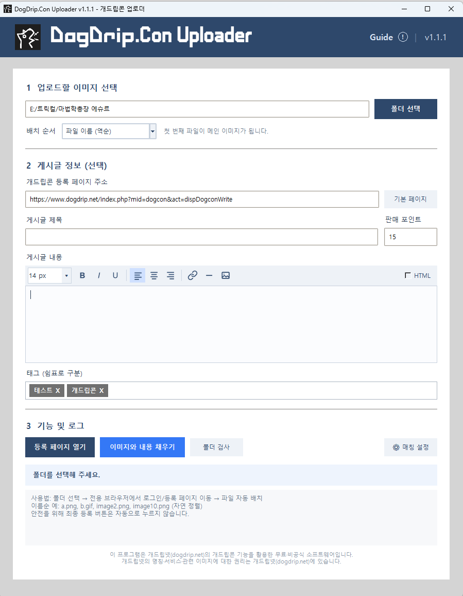
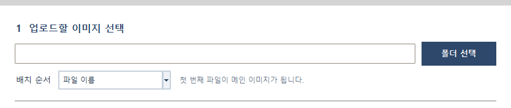
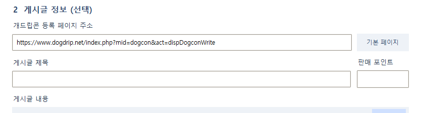
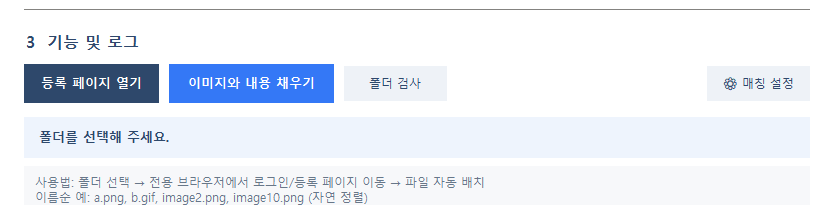

업로드 이미지 선택
이미지가 담긴 폴더와 배치 순서를 선택한 뒤 폴더 검사로 목록을 확인합니다.
자세히 보기 →DOGDRIP.CON UPLOADER GUIDE
최대 50개의 개드립콘 이미지와 게시글 정보를 한 번에 준비하는 비공식 Windows 도구입니다. 최종 등록 전에는 브라우저에서 결과를 직접 확인합니다.

프로그램은 등록 버튼을 대신 누르지 않습니다. 자동 배치 후 브라우저에서 내용을 확인하고 최종 등록하세요.
DogDrip.Con-Uploader-*.exe를 받습니다.폴더 하나를 선택하면 지원되는 이미지가 정렬 기준에 따라 최대 50개까지 배치됩니다.

PNG, JPG, JPEG, GIF, WebP 파일을 지원합니다.
파일 이름·파일 이름 역순·수정된 날짜·수정된 날짜 역순으로 정렬할 수 있습니다.
정렬 결과의 첫 번째 파일이 메인 이미지가 됩니다. 폴더 검사 결과는 파일마다 한 줄로 표시됩니다.
비워 둔 선택 항목은 등록 페이지의 기존 값을 바꾸지 않습니다.

주소를 잘못 입력했다면 기본 페이지 버튼으로 기본 등록 주소를 복원합니다.
필요할 때만 입력합니다. 판매 포인트는 숫자로 입력하세요.
쉼표를 입력하면 배지로 변환됩니다. 배지 오른쪽 X를 누르면 해당 태그만 삭제됩니다.
전용 브라우저는 기본 브라우저와 별도로 실행되며 로그인 상태를 전용 프로필에 유지합니다.

Chrome을 우선 사용하고 없으면 Edge를 사용합니다.
처음 한 번은 개드립넷에 직접 로그인합니다.
폴더와 게시글 정보를 등록 화면에 자동 배치합니다.
브라우저에서 결과를 확인한 후 등록 버튼을 누릅니다.
dogdrip-con-uploader-settings.json화면 입력값과 사용자 설정dogdrip-con-uploader.ini사이트 필드명·선택자·target_host 매칭dogdrip-con-browser-profile/전용 브라우저 로그인 프로필이전 dogcon 이름의 구성 파일이 발견되면 새 dogdrip-con 이름으로 이전하여 기존 설정을 이어서 사용합니다. 화면에 보이는 작업 로그는 별도 로그 파일로 저장하지 않습니다.
무료 비공식 앱이므로 유료 코드 서명이 적용되지 않았습니다. 반드시 이 저장소의 Releases에서 받고, 릴리스에 표시된 SHA256과 파일을 비교하세요.
폴더 검사 전에 배치 순서를 확인하세요. 파일 이름 정렬은 image2가 image10보다 먼저 오도록 자연 정렬을 사용합니다.
사이트의 입력 필드 이름이나 구조가 바뀌었을 수 있습니다. 매칭 설정에서 값을 확인하고, 최신 릴리스가 있는지 살펴보세요.
프로그램과 브라우저를 모두 종료한 뒤 dogdrip-con-browser-profile 폴더를 삭제하면 됩니다. 저장된 로그인 상태도 함께 사라집니다.